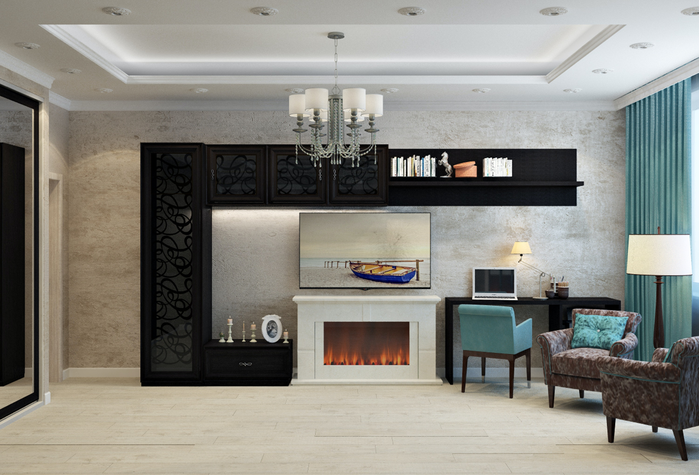
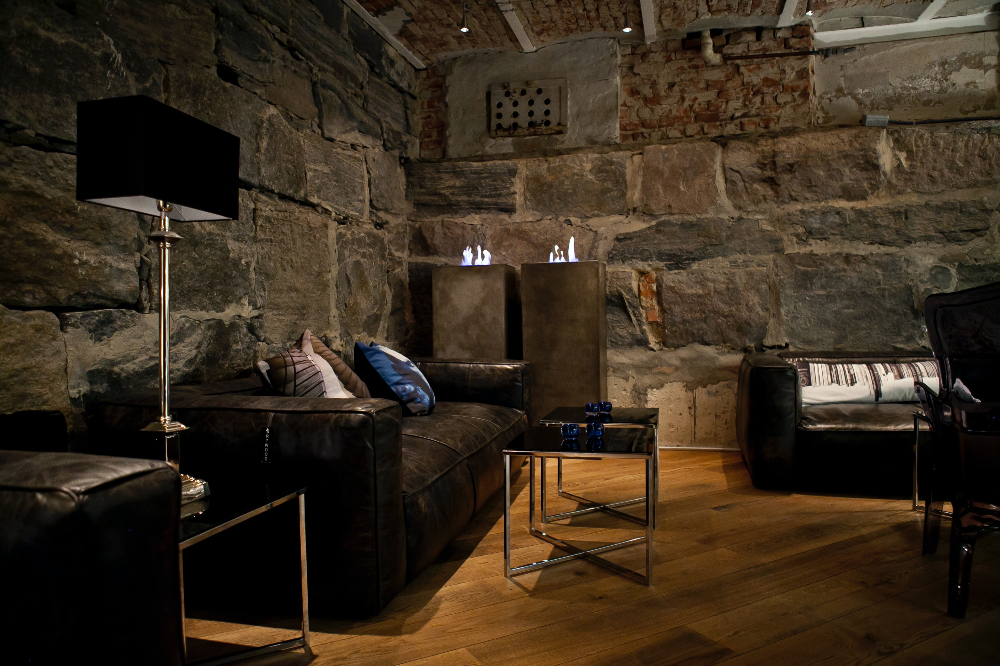

LoFt
≼We Design Your Home ↭With Trendy Design ≼

Our Story
Furnishing Your Home Can Be Quite Over Whelming At time, At Least
That's How For Us
LoFt Was Born To Help Others Going
Through The Maze That Is Interior Design
Interior
design is the art and science of understanding people's behavior
to create functional spaces, that are aesthetically pleasing,
within a building. Decoration is the furnishing or adorning of a
space with decorative elements, sometimes complemented by advice
and practical assistance. In short, interior designers may
decorate, but decorators do not design.
